Deux livrables construits à partir de données brutes : une plateforme Streamlit qui détecte, suit et évalue en temps réel les missions d’un Omron LD-90, et une chaîne automatisée qui transforme des essais HPPC en modèle électrique équivalent de Thévenin d’une cellule lithium-ion, validé par comparaison à la mesure.
Comment collecter et exploiter les données de télémétrie du LD-90 pour caractériser ses missions et leurs performances ?
Comment caractériser expérimentalement une cellule, puis modéliser son comportement électrique par un circuit RC équivalent ?
Plateforme de monitoring de l’Omron LD-90
Acquérir
Dialoguer avec le robot en ARCL
- Client Python en TCP/IP utilisant le langage de commande ARCL d’Omron.
- Interroge le robot toutes les 10 s environ : batterie, position, roues et moteurs, navigation, recharge, Wi-Fi.
- Analyse les réponses texte et les enregistre en CSV pendant que les missions tournent en boucle.
Traiter
Des journaux bruts aux indicateurs de mission
- Suppression des périodes sans mission, des états d’attente et des données répétées à l’arrêt.
- Détection des débuts et fins de mission pour une segmentation automatique.
- Calcul d’indicateurs électriques, énergétiques, thermiques et de connectivité (min, max, moyenne) par mission.
Superviser
Une plateforme utilisable par les opérateurs
- Détection automatique de la mission en cours et suivi de sa progression étape par étape.
- Comparaison en temps réel aux bandes de référence, avec alertes, cause probable et action recommandée.
- Trois niveaux d’accès, une vue historique et un assistant conversationnel alimenté par le contexte du robot.
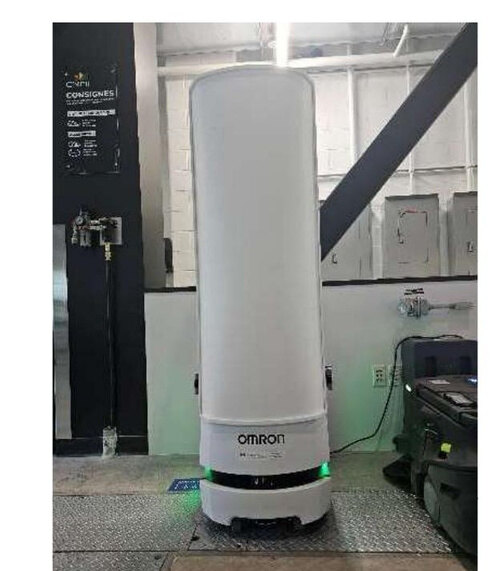
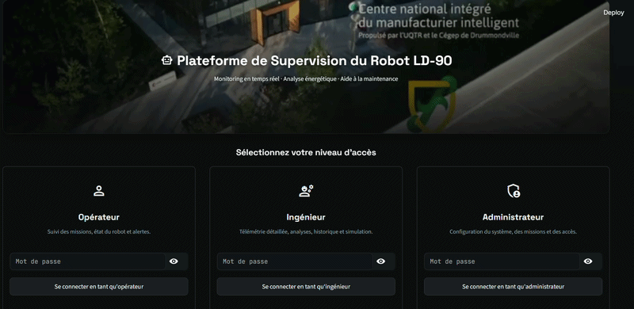
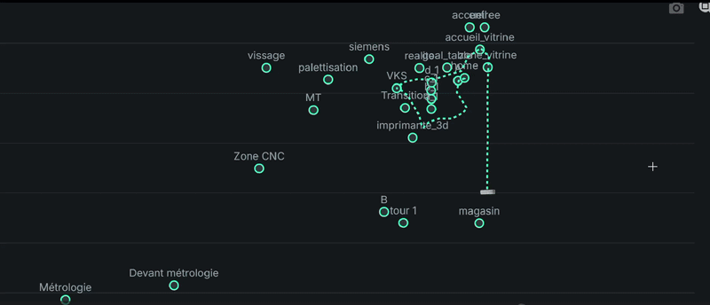
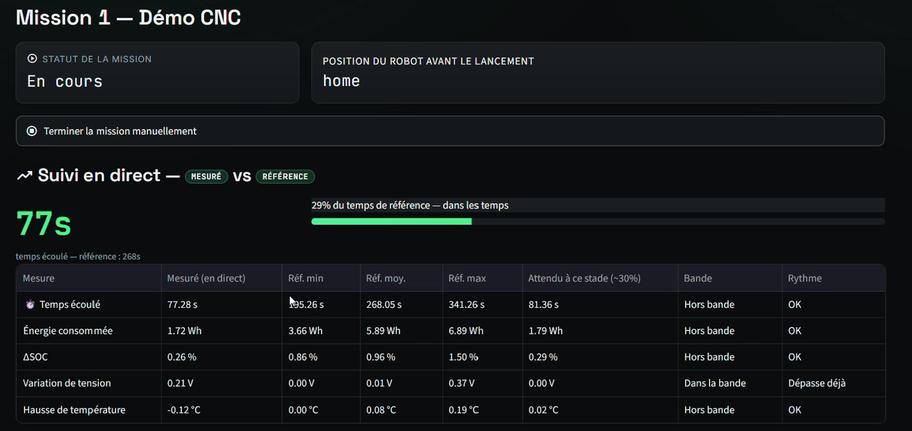
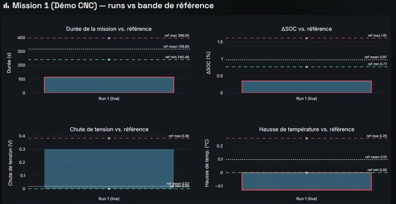
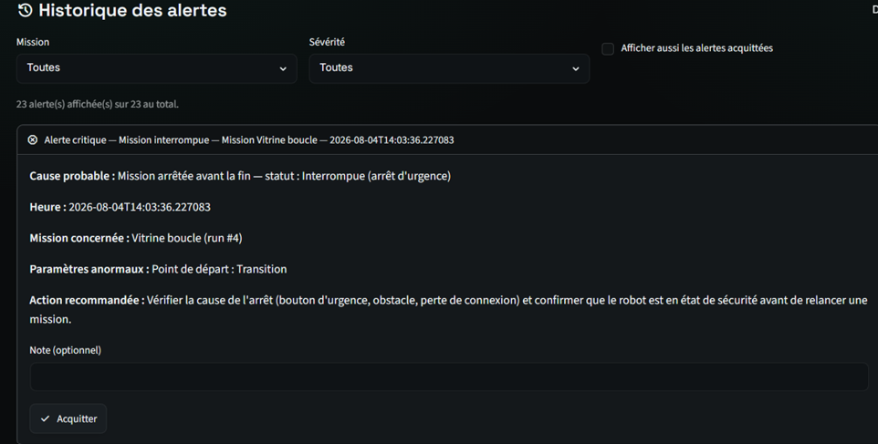
Un problème de conception à signaler : les missions de référence étaient enregistrées en boucle, donc valables uniquement depuis le point de départ prévu. J’ai généralisé les références pour qu’une même mission puisse être supervisée quel que soit le point de départ du robot.
Cellule lithium-ion : caractérisation HPPC et modèle de Thévenin
Tester
Essais HPPC à cinq températures
- Cellule Turnigy Graphene 5000 mAh.
- Essais HPPC (impulsions de charge et de décharge, repos, plusieurs C-rates) à −10, 0, 10, 25 et 40 °C.
- État de charge calculé par comptage de coulombs.
Identifier
Quatre paramètres par SOC et température
- Bande morte de ±0,5 A pour classer repos, charge et décharge ; seules les impulsions de 8 à 12 s sont conservées.
- OCV à partir de la fenêtre de repos avant chaque impulsion (médiane par palier de SOC) ; R₀ à partir de la chute de tension instantanée.
- Rp et Cp par ajustement exponentiel de la relaxation (Cp = τ / Rp).
Valider
Simuler, puis comparer
- Simulateur interactif : choix de la température, du SOC et du profil de courant, tension prédite en sortie.
- Validation par RMSE entre tension simulée et tension mesurée à chaque température.
- Constat : le froid dégrade fortement la cellule, surtout à faible SOC.
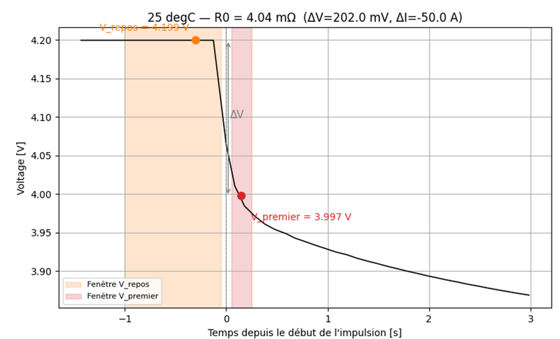
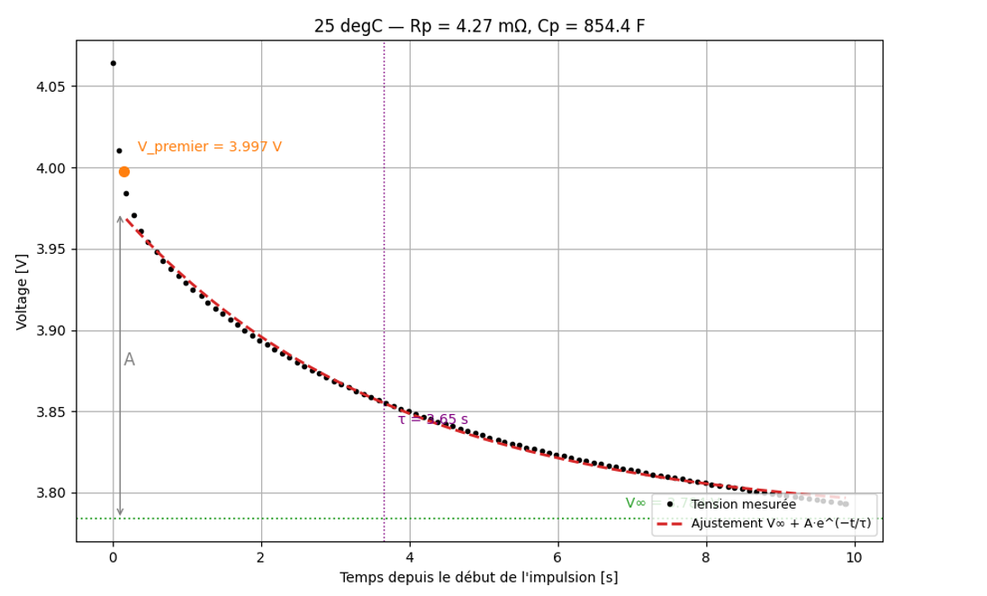
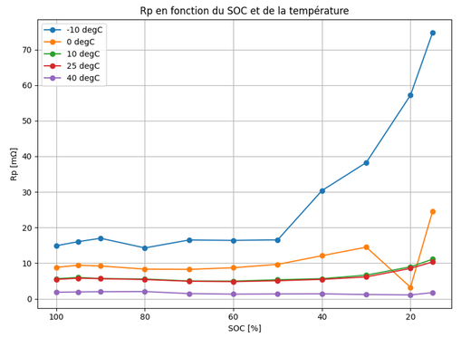
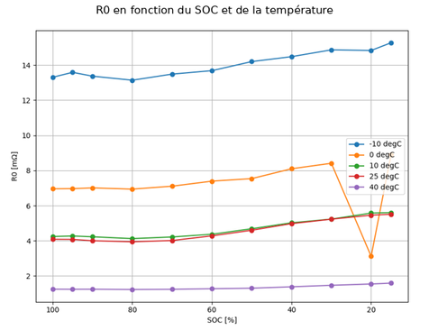
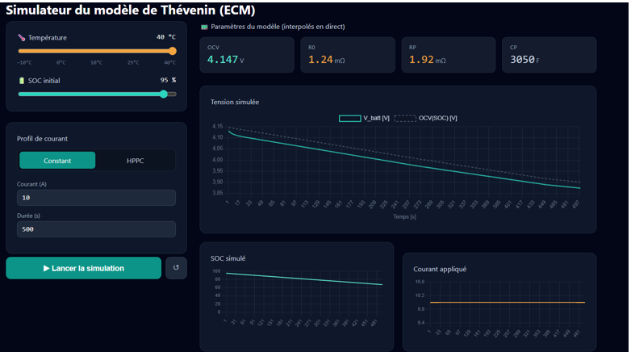
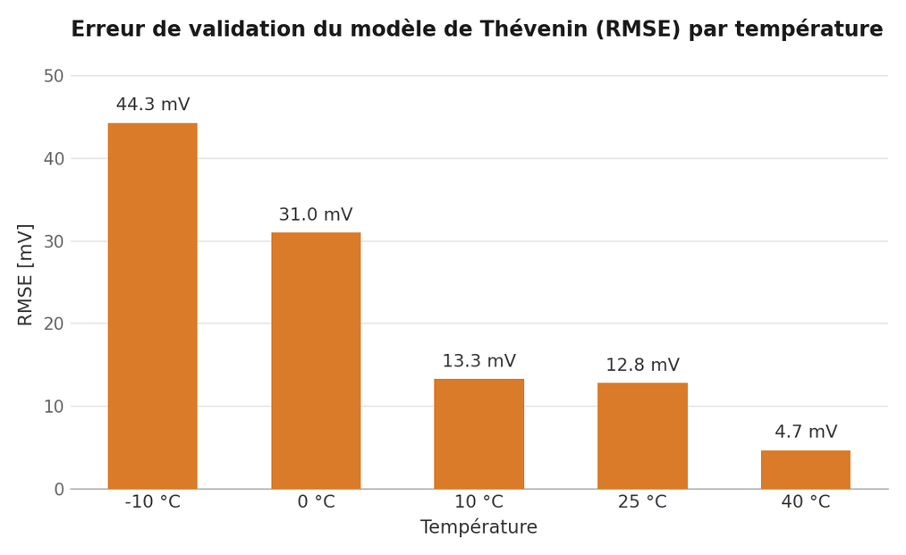
Limites et suites : la précision diminue au froid (31,0 mV à 0 °C, 44,3 mV à −10 °C), où un modèle du premier ordre ne capture plus la polarisation ; un modèle d’ordre supérieur (2-RC) est l’étape suivante, avec la caractérisation de la batterie réelle du LD-90 et l’enregistrement de davantage de missions de référence. Durant le même stage, j’ai aussi entraîné des modèles de machine learning pour prédire la durée des missions, la consommation énergétique et le SOC à partir de la télémétrie, et développé un modèle de batterie du MiR600 sous Simulink. Soutenu à l’INSAT le 21 septembre 2026.